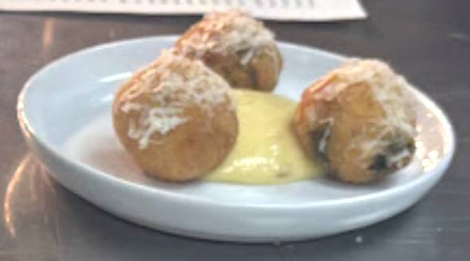

Plate
Small starter plate
Ingredients
- Arancini balls
- Confit garlic mayo
- Parmesan
Order of assembly
- Fry arancini for a couple of minutes to crisp the outside
- Transfer to oven for 4–5 minutes to heat through
- Pipe confit garlic mayo into the centre of the plate
- Grate parmesan over the arancini while still hot
- Place arancini in a tight triangle around the mayo
Finish on the pass
Serve immediately while hot.